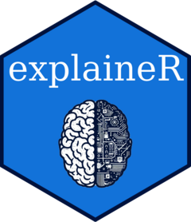

Overview
It enables detailed interpretation of complex classification and regression models through Shapley analysis including data-driven characterization of subgroups of individuals. Furthermore, it facilitates multi-measure model evaluation, model fairness, and decision curve analysis. Additionally, it offers enhanced visualizations with interactive elements. Find out how to use the package by checking out the package tutorials.
Installation
You can install the released version of the package from CRAN:
install.packages("explainer")And the development version from GitHub:
# install.packages("devtools")
devtools::install_github("PERSIMUNE/explainer")Usage
Provide examples of how to use your package. This could include basic code snippets or links to more detailed vignettes and documentation.
# Load necessary packages
library("explainer")
# Set seed for reproducibility
seed <- 246
set.seed(seed)
# load necessary packages
library(mlbench)
library(mlr3learners)
library(ranger)
# Load BreastCancer dataset
utils::data("BreastCancer", package = "mlbench")
# Specify target column and positive class
target_col <- "Class"
positive_class <- "malignant"
# Extract relevant columns from dataset
mydata <- BreastCancer[, -1]
mydata <- na.omit(mydata)
# Generate random 'sex' and 'age' columns
sex <- sample(c("Male", "Female"), size = nrow(mydata), replace = TRUE)
mydata$age <- as.numeric(sample(seq(18, 60), size = nrow(mydata), replace = TRUE))
mydata$sex <- factor(sex, levels = c("Male", "Female"), labels = c(1, 0))
# Create a classification task
maintask <- mlr3::TaskClassif$new(
id = "my_classification_task",
backend = mydata,
target = target_col,
positive = positive_class
)
# Split the dataset for training
splits <- mlr3::partition(maintask)
# Create a ranger learner for classification
mylrn <- mlr3::lrn("classif.ranger", predict_type = "prob")
# Train the learner on the training set
mylrn$train(maintask, splits$train)
# Generate SHAP values and plot
SHAP_output <- eSHAP_plot(
task = maintask,
trained_model = mylrn,
splits = splits,
sample.size = 30,
seed = seed,
subset = 0.8
)
shap_Mean_wide <- SHAP_output[[2]]
shap_Mean_long <- SHAP_output[[3]]
# Generate SHAP clusters and plot
SHAP_plot_clusters <- SHAPclust(
task = maintask,
trained_model = mylrn,
splits = splits,
shap_Mean_wide = shap_Mean_wide,
shap_Mean_long = shap_Mean_long,
num_of_clusters = 4,
seed = seed,
subset = 0.8
)Contributing
If you want to contribute to the development of this package, please read CONTRIBUTING.md for guidelines.
Issues
If you encounter any issues or have suggestions, please open an issue.
License
This package is released under the MIT License.
References
Zargari Marandi R, Leung P, Sigera C, Murray DD, Weeratunga P, Fernando D, Rodrigo C, Rajapakse S, MacPherson CR, (2023). Development of a machine learning model for early prediction of plasma leakage in suspected dengue patients. PLoS Negl Trop Dis 17(3): e0010758. doi:10.1371/journal.pntd.0010758
Lang M, Binder M, Richter J, Schratz P, Pfisterer F, Coors S, Au Q, Casalicchio G, Kotthoff L, Bischl B, (2019). mlr3: A modern object-oriented machine learning framework in R. Journal of Open Source Software. doi:10.21105/joss.01903
Molnar C, Bischl B, Casalicchio G, (2018). iml: An R package for Interpretable Machine Learning.JOSS, 3(26), 786. doi:10.21105/joss.00786
Lundberg SM and Lee SI, (2017). A unified approach to interpreting model predictions. Advances in neural information processing systems.arXiv:1705.07874
Ludvig Renbo Olsen and Hugh Benjamin Zachariae, (2022). cvms: Cross-Validation for Model Selection. R package version 1.3.4. https://CRAN.R-project.org/package=cvms
R Core Team (2021). R: A language and environment for statistical computing. R Foundation for Statistical Computing, Vienna, Austria. URL https://www.R-project.org/.